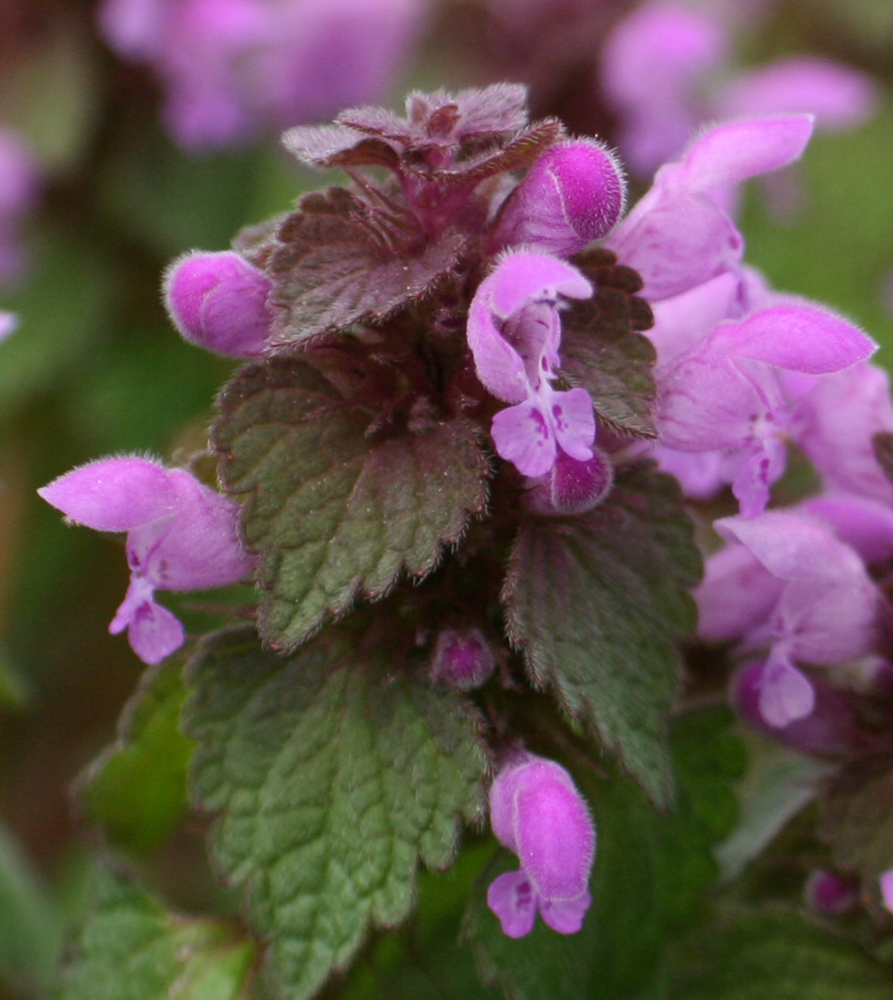
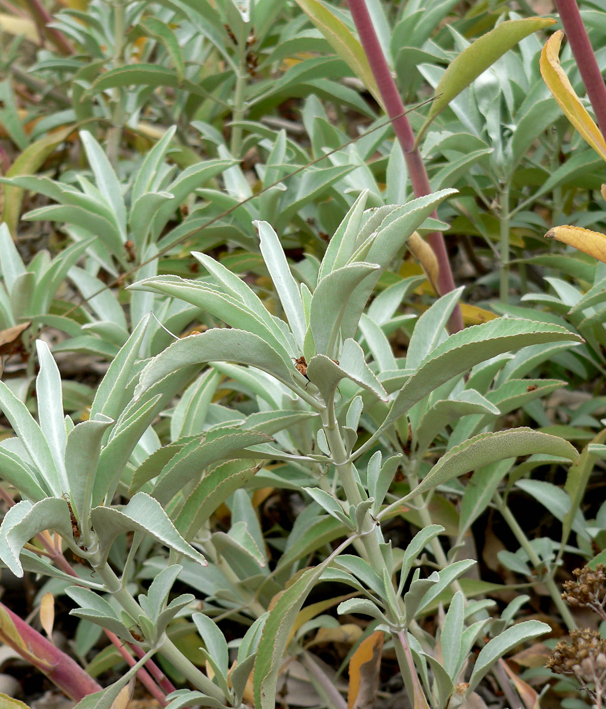
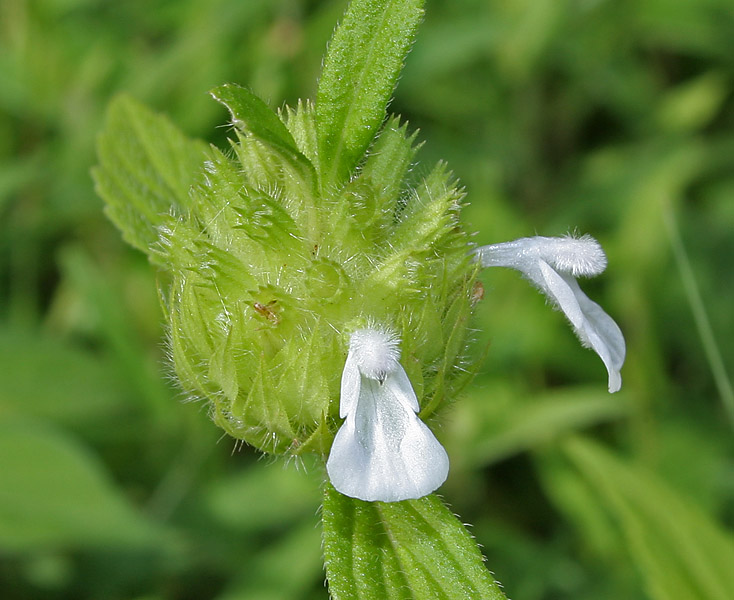
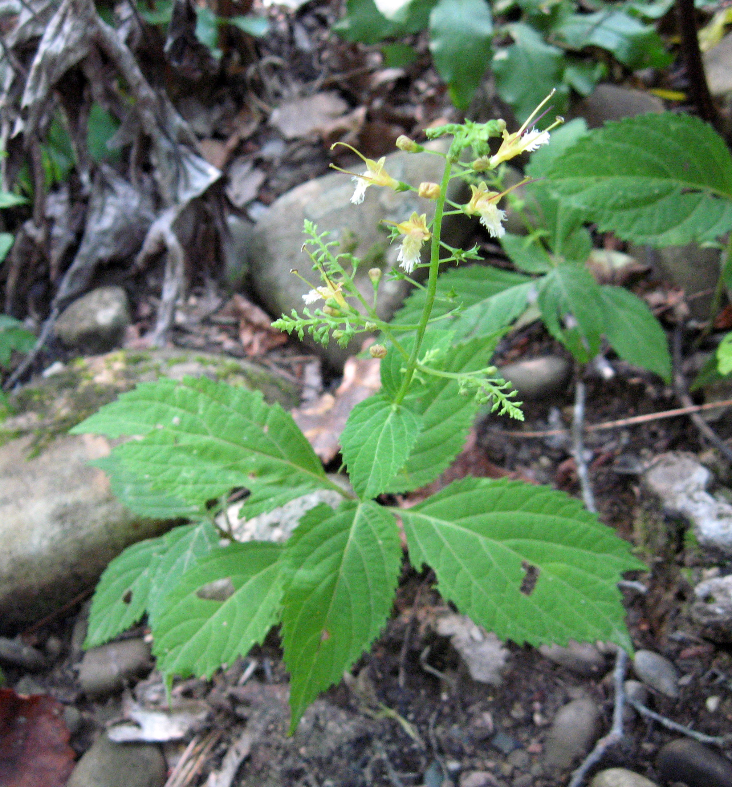

Lamiaceae
mint family
|  Lamium purpureum (red/purple dead-nettle) from Wikimedia Commons by Daniel J. Layton - Own work, CC BY-SA 4.0 |
 Salvia apiana (white sage) from Wikimedia Commons by Stan Shebs, CC BY-SA 3.0 |
|  Leucas aspera (thumbai) from Wikimedia Commons by J.M.Garg - Own work, CC BY-SA 4.0 |
 Tetradenia riparia (misty plume bush) from Wikimedia Commons by JMK - Own work, CC BY-SA 3.0 |
{kind=link}
{kind=link}
{kind=link}
botanical characteristics
Botany in a Day, p. 157-9 | "Lamiaceae", Wikipedia
- growth form
- varied; herbs to shrubs to trees (rarely, vines)
- stems/leaves
- often square stems
- simple, opposite leaves
- leaf pairs appear at right angles to the previous one (decussate) or are whorled
- leaves are usually aromatic
- flowers
- bisexual and irregular
- 5 united sepals and 5 united petals (typically 2 lobes up and 3 lobes down)
- similar to flowers of the figwort family
- reproductive structures
- 4 stamens with one pair longer than the other
- ovary positioned superior
- 2 united carpels, matures as a capsule containing 4 nutlets
distribution
Botany in a Day, p. 157-9 | "Lamiaceae", Wikipedia | "Lamiaceae Essential Oils, Phytochemical Profile, Antioxidant, and Biological Activities", PubMed
- cosmopolitan distribution
- widely distributed around the globe, with various heights and habitats and greater abundance in the Mediterranean region
- they prefer hot areas but can also be found in regions with low temperatures
- 236 genera and anywhere from 6900 to 7534 species
- about 50 genera found in North America
- many species are widely cultivated and easily propogated by stem cuttings
ecological roles
"Lamiaceae", PlantZAfrica
- members are strongly adapted for bird pollination
- they are important for providing nectar and pollen to support bee colonies
"Pollinator activity and their role on seed set of medicinal and aromatic Lamiaceae plants", Taylor & Francis Online
- abundance of bee pollinator activity contributes to enhancing the maximum number of seeds, indicating a high dependency of Lamiaceae plants on bee pollinators to maintain their reproduction and regeneration activities
common pharmacological constituents
"Angiosperm families - Labiatae Juss.", DELTA
- sugars transported as sugar alcohols + oligosaccharides + sucrose (in Rosmarinus, Salvia); cyanogenic (rarely), or not cyanogenic; alkaloids present (commonly), or absent; verbascosides detected (in 6 genera, absent from Lamium album); cornoside detected (Teucrium); iridoids detected (commonly); ‘Route II’ type (normal and decarb.); saponins/sapogenins absent; proanthocyanidins absent; flavonols mostly absent; ellagic acid absent (15 species, 14 genera); ursolic acid present; aluminium accumulation not found; sieve-tube plastids S-type
"Lamiaceae Essential Oils, Phytochemical Profile, Antioxidant, and Biological Activities", PubMed
- Lamiaceae members rich in volatile oils, usually characterized by 2 or 3 major components
- common components include (in no particular order) menthol, menthone, cineole, eugenol, terpineol, thymol, thujene, pinene, carvacrol, linalool, geraniol, farnesene, caryophyllene, pulegone, limonene, camphor, citral, citronellal, terpinene
- many species rich in flavonoids and terpenes, with diterpenoids being the most abundant
patterns in medicinal actions
- many species have medicinal, relieving action on the respiratory, digestive, and nervous systems; also, a stimulating action on the cardiovascular
- creates space in the respiratory: expectorant, anticatarrhal, decongestant, antitussive, antispasmodic
- relieves discomfort in the digestive: carminative, digestive stimulant, antiemetic, cholagogue, antispasmodic
- relieves tension in the nervous: nervine, analgesic, neuroprotective, anxiolytic
- defends against pathogens: antiseptic, antibacterial, antiviral, antifungal, antihelminthic, insecticidal, insect repellent
- stimulates the cardiovascular: vasodilator, diaphoretic, hypotensive, emmenagogue
- helps return to a sense of home/self/comfort in the body -- reifies the self, jupiterian
traditional/cultural uses
"Lamiaceae", Wikipedia | "Lamiaceae Essential Oils, Phytochemical Profile, Antioxidant, and Biological Activities", PubMed
- many members of the family are widely cultivated for their aromatic qualities and culinary use
- some are grown for decorative foliage or seed, such as Salvia hispanica (chia), or for their edible tubers, such as Plectranthus edulis, P. esculentus, P. rotundifolius, and Stachys affinis (Chinese artichoke)
- many are also grown ornamentally, notably Coleus, Plectranthus, and many Salvia species and hybrids
- several species of aromatic plants that are applied in traditional medicine and in the pharmaceutical and food industries because of their biological properties
warnings
- volatile oils can be toxic if taken internally
extra information
"Lamiaceae", Wikipedia
- name refers to the gullet shape of the flowers; invokes Lamia, a woman scorned by Zeus and Hera (adultery/jealousy) and is associated with infantile cannibalism
- also known as Labiatae, refering to the labial shape of the flowers
prominent genera
- Agastache (giant hyssops)
- Betonica (betonies)
- Callicarpa (beautyberries)
- Coleus (spurflowers)
- Collinsonia (stoneroots)
- Glechoma (ground ivies)
- Galeopsis (hempnettles)
- Hedeoma (false pennyroyals)
- Hyssopus (hyssops)
- Lamium (dead-nettles, henbits)
- Lavandula (lavenders)
- Leonotis (lion's ears, incl. wild dagga)
- Leonurus (motherworts)
- Lycopus (bugleweeds, water horehounds)
- Marrubium (horehounds)
- Melissa (lemon balms)
- Mentha (mints)
- Monarda (bee balms, bergamots)
- Monardella (coyote mints)
- Nepeta (catnips)
- Ocimum (basils)
- Origanum (oreganos, incl. marjoram)
- Perilla (perillas, incl. shiso)
- Plectranthus (spurflowers)
- Pogostemon (incl. patchouli)
- Prunella (self-heals, heal-alls)
- Salvia (sages, incl. chia, rosemary)
- Satureja (savories)
- Scutellaria (skullcaps)
- Stachys (self-heals, heal-alls, lamb's ears)
- Tectona (teaks)
- Thymus (thymes)
- Vitex (chastetrees)
plant highlights
see list of materia medica entries here
Thymus vulgaris
 from Wikimedia Commons by Greenmars - Own work, CC BY-SA 3.0 |
common names: thyme en español: tomillo |
description
"Thymus vulgaris", Wikipedia
- bushy, woody-based evergreen subshrub
- small, highly aromatic, grey-green leaves
- clusters of purple or pink flowers
distribution
"Thymus vulgaris", Wikipedia
- native to southern Europe from the western Mediterranean to southern Italy
- widely cultivated as a culinary herb
- listed as 'Least Concern' on the IUCN Red List of Threatened Species
medicinal/magical uses
The Modern Herbal Dispensatory, p. 311-2
- antibacterial, antifungal, antiviral, aromatic, carminative, decongestant, emmenagogue, circulatory stimulant, warming, drying
- powerful remedy for infections in the lungs and digestive tract
- indicated for spasmodic conditions of the respiratory and urinary tracts with infectious symptoms
- good antifungal, can be used to treat dysbiosis
- with fenugreek for clearing sinus congestion
- topically for insect bites, stings, minor pain
The New Age Herbalist, p. 73, 76
- antibacterial, antifungal, antihelminthic, diaphoretic, expectorant, carminative, antispasmodic
- excellent remedy for sore throats and infected gums
- good for bronchitis and whooping cough
- in baths to ease rheumatic pain
preparation methods
The Modern Herbal Dispensatory, p. 311-2
- infusion
- tincture
- glycerite
- oil/salve
warnings
The Modern Herbal Dispensatory, p. 311-2 | The New Age Herbalist, p. 73, 76
- avoid large doses during pregnancy (culinary use okay)
- isolated volatile oil is toxic in any quantity and should not be used internally except by professionals
Origanum vulgare
 from Wikimedia Commons by Ivar Leidus - Own work, CC BY-SA 3.0 |
common names: oregano en español: orégano |
description
"Oregano", Wikipedia
- woody perennial plant
- leaves are spade-shaped, olive-green, and opposite
- flowers are purple, pink, or white and grouped in clusters
distribution
"Oregano", Wikipedia
- native to the Mediterranean region
- widely naturalised and cultivated elsewhere in the temperate Northern Hemisphere
- listed as 'Least Concern' on the IUCN Red List of Threatened Species
medicinal/magical uses
The Modern Herbal Dispensatory, p. 276-7
- antifungal, antimicrobial, antiseptic, aromatic, expectorant, warming, drying
- useful for infections of the respiratory and digestive tracts
- good remedy for fungal infections, coughs, tonsillitis, bronchitis, asthma, chest congestion
preparation methods
The Modern Herbal Dispensatory, p. 276-7
- infusion
- tincture
- glycerite
warnings
The Modern Herbal Dispensatory, p. 276-7
- avoid in large doses during pregnancy
- essential oil is toxic to the liver and should not be used internally
Betonica officinalis
 from Wikimedia Commons by Orjen - Own work, CC BY-SA 3.0 |
common names: (wood) betony en español: betónica |
description
"Betonica officinalis", Wikipedia
- leaves are stalked on upright stems, narrowly oval, with a heart-shaped base, with a somewhat wrinkled texture and toothed margins
- calyx is edged with bristles
- corolla has a flat upper lip, almost straight when seen from the side
distribution
"Betonica officinalis", Wikipedia
- native to Europe, western Asia, and northern Africa
medicinal/magical uses
The Modern Herbal Dispensatory, p. 324
- analgesic, nervine, sedative, cooling, relaxing
- relaxes tension in the muscles
- frequently used for headaches and to relieve pain and tension in the middle back, face, and muscles
- helpful for overactive mind and stress, relieves tension in thoughts and emotions
The New Age Herbalist, p. 73
- astringent/vulnerary: effective poultice for cuts and bruises
- stimulates the circulation
- useful for headaches and migraines
- relaxes the nervous system and helps relieve neuralgia
- has been used for liver and gallbladder complaints and as snuff
preparation methods
The Modern Herbal Dispensatory, p. 324
- infusion
- tincture
warnings
The Modern Herbal Dispensatory, p. 324
- no known warnings
Collinsonia canadensis
|  from Wikimedia Commons by Mason Brock (Masebrock) - Own work, Public Domain |
common names: stoneroot en español: collinsonia, raíz de piedra |
{kind=link}
description
"Collinsonia canadensis", Wikipedia
- leaves are green, large, sharply toothed, and ovate
- terminal clusters of tiny, tubular yellow flowers
distribution
"Collinsonia canadensis", Wikipedia | "Stone Root – Collinsonia canadensis", United Plant Savers
- native to eastern North America, primarily east of the Mississippi River, where it is widespread
- most broadly distributed member of the genus Collinsonia, ranging north to Quebec and south to Florida
- natural habitat is nutrient-rich mesic forests, most often in rocky, calcareous areas
- listed as 'Endangered' in Wisconsin
- listed as 'At Risk' by United Plant Savers
medicinal/magical uses
The Modern Herbal Dispensatory, p. 215
- astringent, vascular tonic, cooling, constricting
- excellent astringent for rectal problems like anal fistulas and hemorrhoids
- also used for sore throats and laryngitis; specific for hoarseness/throat irritation for speakers and singers
- can be used topically for poison oak and ivy and for injuries
The New Age Herbalist, p. 65
- diuretic
- strengthens the structure and function of the veins; treats varicose veins when taken internally
- particularly good for the treatment of hemorrhoids
- used to treat spasmodic pain in the rectum and for anal fissures
- astringent and useful to treat diarrhea
preparation methods
The Modern Herbal Dispensatory, p. 215
- decoction
- tincture
warnings
The Modern Herbal Dispensatory, p. 215
- no known warnings
Hyssopus officinalis
 from Wikimedia Commons by H. Zell - Own work, CC BY-SA 3.0 |
common names: hyssop en español: hisopo |
description
"Hyssopus officinalis", Wikipedia
- brightly coloured shrub or subshrub
- stem is woody at the base, from which grow a number of upright branches
- leaves are lanceolate and dark green
- pink, blue, or white fragrant flowers
distribution
"Hyssopus officinalis", Wikipedia
- native to Southern Europe, the Middle East, and the region surrounding the Caspian Sea
- resistant to drought, and tolerant of chalky, sandy soils; thrives in full sun and warm climates
medicinal/magical uses
The Modern Herbal Dispensatory, p. 251-2
- antiseptic, antiviral, carminative, decongestant, emmenagogue, expectorant, warming, drying
- considered a cure-all for respiratory ailments
- clears thick and congested phlegm from the lungs
- antiseptic, useful for cuts/abrasions and insect bites/stings
The New Age Herbalist, p. 65
- prescribed for a range of respiratory disorders such as influenza, colds, and bronchitis
- expectorant
- shown to have antiviral action, especially against Herpes simplex virus
- externally to treat burns and bruises
preparation methods
The Modern Herbal Dispensatory, p. 251-2
- infusion
- tincture
warnings
The Modern Herbal Dispensatory, p. 251-2 | The New Age Herbalist, p. 65
- essential oil is toxic
- avoid during pregnancy
- only use small doses; considered safe but professional supervision is advised
sources
"Angiosperm families - Labiatae Juss." on DELTA - DEscription Language for TAxonomy. Retrieved 26 August 2025.
"Betonica officinalis" on Wikipedia. Retrieved 26 August 2025.
"Collinsonia canadensis" on Wikipedia. Retrieved 26 August 2025.
da Silva, Luiz Renan Ramos, Oberdan Oliveira Ferreira, Jorddy Nevez Cruz, Celeste de Jesus Pereira Franco, Tainá Oliveira dos Anjos, Marcia Moraes Cascaes, Wanessa Almeida da Costa, Eloisa Helena de Aguiar Andrade, and Mozaniel Santana de Oliveira. "Lamiaceae Essential Oils, Phytochemical Profile, Antioxidant, and Biological Activities" (2021) on PubMed. Retrieved 26 August 2025.
Easely, Thomas and Steven Horne. The Modern Herbal Dispensatory (2016)
Elpel, Thomas J. Botany in a Day: The Patterns Method of Plant Identification (2021)
Goldberg Blackthorn, Samantha. Ace of Cups Herbal Medicine and Botanical Magic Herbal School (2024)
"Hyssopus officinalis" on Wikipedia. Retrieved 26 August 2025.
"Lamiaceae" on PlantZAfrica. Retrieved 26 August 2025.
"Lamiaceae" on Wikipedia. Retrieved 26 August 2025.
Mabey, Richard et al. The New Age Herbalist (1988)
"Oregano" on Wikipedia. Retrieved 26 August 2025.
"Stone Root – Collinsonia canadensis" on United Plant Savers. Retrieved 26 August 2025.
"Thymus vulgaris" on Wikipedia. Retrieved 26 August 2025.
Venkatesh, Y.N., T. Neethu, M. Ashajyothi, Veeresh Kumar, and Channayya Hiremath. "Pollinator activity and their role on seed set of medicinal and aromatic Lamiaceae plants" (2022) on Taylor & Francis Online. Retrieved 26 August 2025.